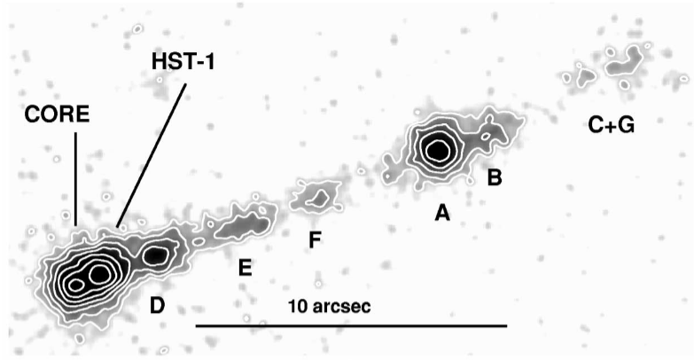
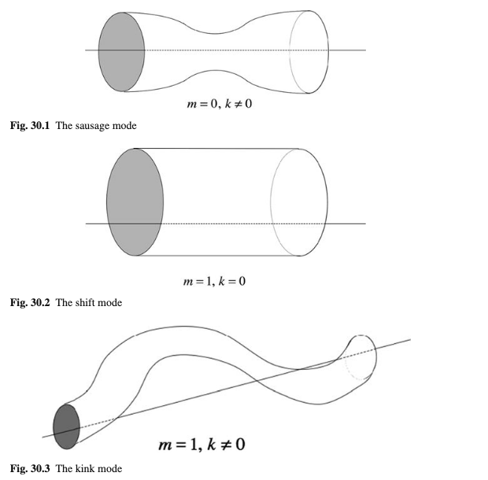
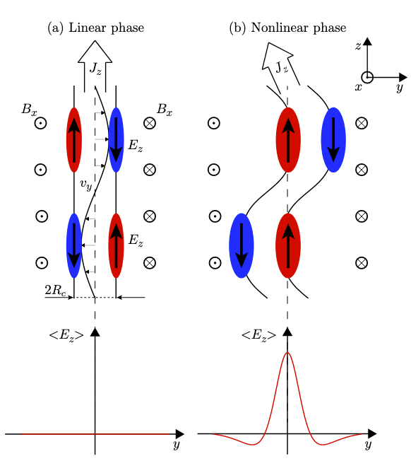
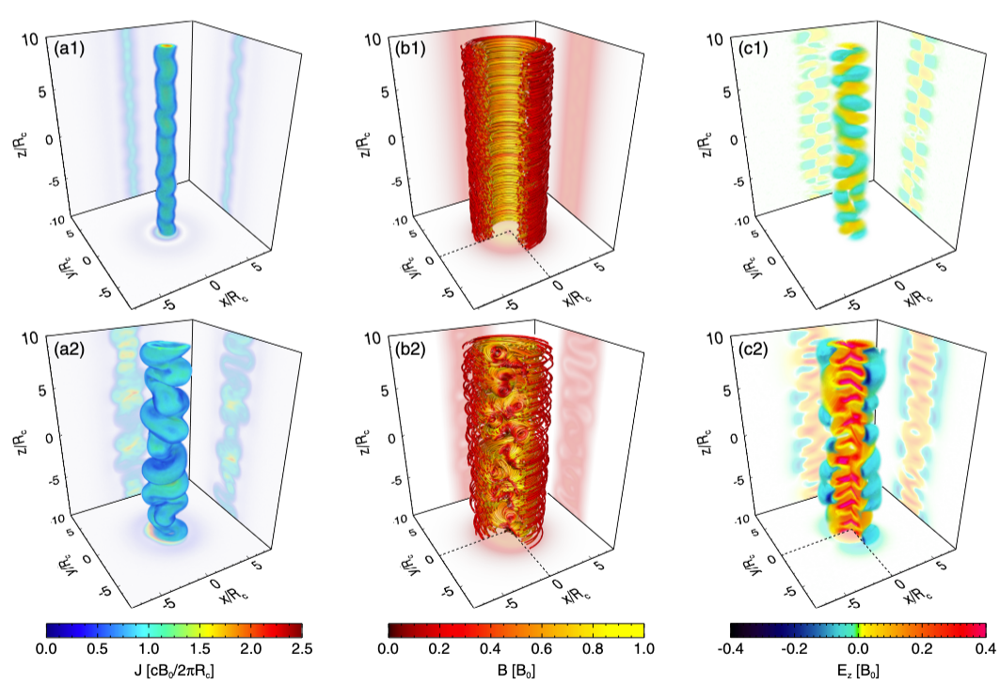
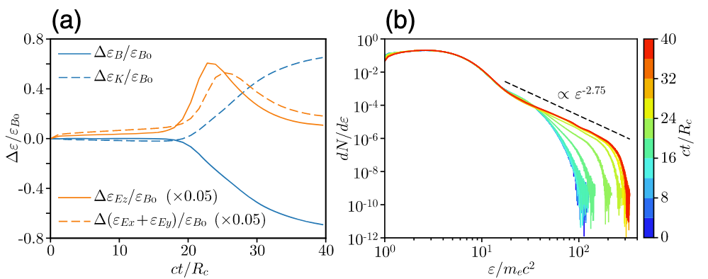
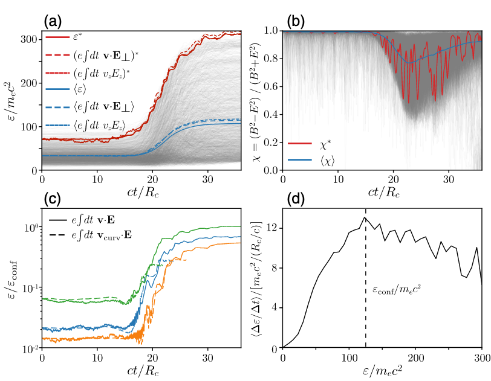
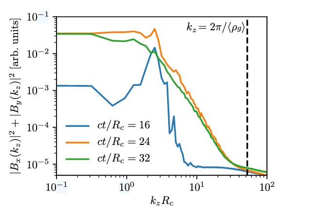
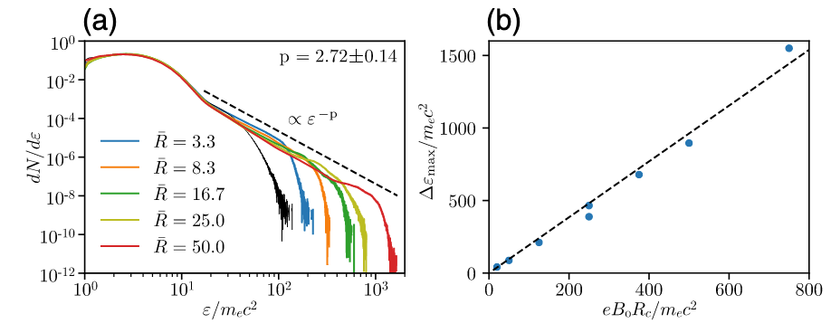

Efficient Nonthermal Particle Acceleration
by the Kink Instability in Relativistic Jets
Scientific Context - AGN jets as cosmic accelerators

Extragalactic jets from active galactic nuclei (AGNs) carry relativistic magnetized plasma and produce nonthermal electrons/positrons that radiate from radio to TeV energies.
Scientific Context - AGN jets as cosmic accelerators
AGN jets are also candidate sources of ultrahigh-energy cosmic rays (UHECRs; E > 10²⁰ eV), bolstered by recent neutrino–γ coincidences (e.g., TXS 0506+056)

Acceleration Puzzle
Open question: How do jets convert magnetic energy into nonthermal particles so efficiently?
Standard shock acceleration struggles in magnetically dominated flows, showing low efficiency in PIC studies
Alternative: Tap jet’s magnetic free energy via instabilities.
Stability of Jets
Unstable: magnetized jets are strongly unstable to current-driven instabilities in non-relativistic jets
- Question: magnetized jets are unable to break out of the star, a necessary condition to form a GRB.
Stable: half of the energy remains locked in the magnetic form
- Question: it would be difficult to explain the high-energy emission radiated from them
Solution: A local current-driven instability in a mildly unstable jet?
Kink Instability (KI)
\[ \mathbf{\xi}(\mathbf{r})=\mathbf{\xi}(r) e^{i(m \theta+k z)} \]
\[ \mathbf{B} \cdot \nabla=\frac{i m}{r} B_\theta+i k B_z \]

Kink Instability (KI) - Two stages
Internal kink (First): grows internally in the jet without affecting the overall jet morphology. It converts the magnetic energy into thermal energy via magnetic reconnection. As a result, the toroidal magnetic field decays, and the jet finds itself in a stable configuration that inhibits further growth of the internal kink
External kink (Second): kink modes can still grow externally on the periphery of the jet and perturb the entire jet body. Such an external kink instability grows over longer time-scales and typically affects the outer parts of the jet, near the jet head.
Internal instability - two stages

Simulation Setup
Approach: 3D PIC simulations with OSIRIS 3.0, tracking both MHD scales (jet radius R₀) and kinetic scales (gyroradius ρ)
Parameters:
Electron‑positron plasma in hydromagnetic equilibrium.
Toroidal B‑field, magnetization \(σ ≡ B₀²/(4πnmc²)\) up to σ = 25.
Plasma current density \(J= c/4π ∇ × B\) supported by symmetrically streaming electrons and positrons.
Domain size ~ (10–20) R₀, resolving ρ with ≳10 cells.
Up to 5.5×10¹¹ particles tracked.
Simulation results
Simulation results

Simulation results - Temporal evolution of energies and particle energy spectrum

Acceleration mechanism

Inductive electric field accompanied by guiding center curvature drift
\[ \mathbf{E}=-\mathbf{v} \times \mathbf{B} \simeq E_z \hat{\mathbf{z}} \]
\[ \mathbf{v}_{\text {curv }}=\gamma m v_{\|}^2 c \mathbf{B} \times \mathbf{κ} / e B^2 \]
These drifts allow particles to gain energy from the inductive electric field, with the instantaneous rate of energy gain being connected to the spatial and temporal distribution of the magnetic field curvature. Figure 3(c) illustrates the energy evolution of particles that start highly magnetized and reach the confinement energy. These particles experience fast energy gains by encountering regions where the field curvature radius κ−1 is only a few times their gyroradius. Once they are accelerated to a large fraction (0.2–0.3) of the confinement energy, the guiding center approximation breaks down [Fig. 3(c)], and particles become effectively unmagnetized, moving with vz ∼ c along the jet axis. The acceleration stops when the particles either escape the jet spine in the transverse direction or when the electric field decays as the instability subsides.
Acceleration mechanism

A large-scale (∼Rc) inductive electric field acting in concert with a magnetic field that is tangled over a range of scales that extends down to \(ρ_g\).
Astrophysical Implications
Extrapolated to astrophysical systems, where the enormous scale separation implies huge energy gains.

Strengths & Limitations
Strengths:
Fully kinetic, 3D, self‑consistent; captures both MHD and particle scales.
Robust across parameter scans (σ, B‑profile, system size).
Detailed acceleration mechanism analysis.
Limitations & open questions:
Electron‑positron plasma with large gyroradius.
Radiative cooling and pair production not included.
Connection to global jet dynamics and external kink instability.